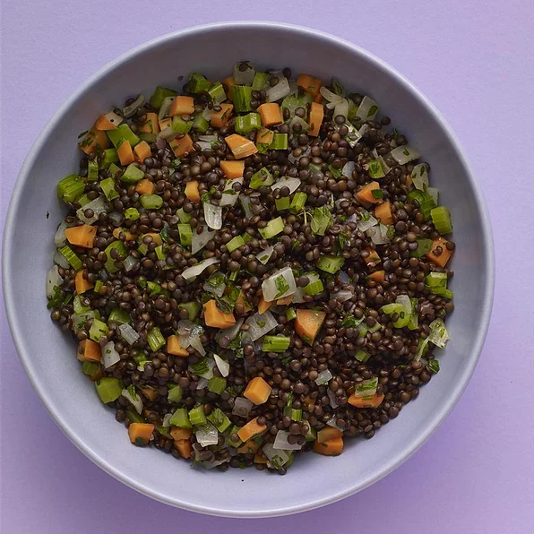

Braised black lentils, also known as beluga lentils, since they resemble the most prized of all caviar varieties, make up one of my favorite side dishes.
Melt butter in olive oil over medium heat in a saucepan. Cook and stir onion, carrot, celery, and salt until vegetables are softened and onion is translucent, about 10 minutes.
Reduce heat to low and add thyme sprigs and pepper. Stir in lentils until well coated. Add chicken stock and bring to a gentle simmer.
Reduce heat to low, cover and cook, checking occasionally, until the lentils are tender and have absorbed all the liquid, about 35 minutes. Remove from heat and discard thyme stems. Stir in champagne vinegar and parsley. Season with salt and pepper to taste.